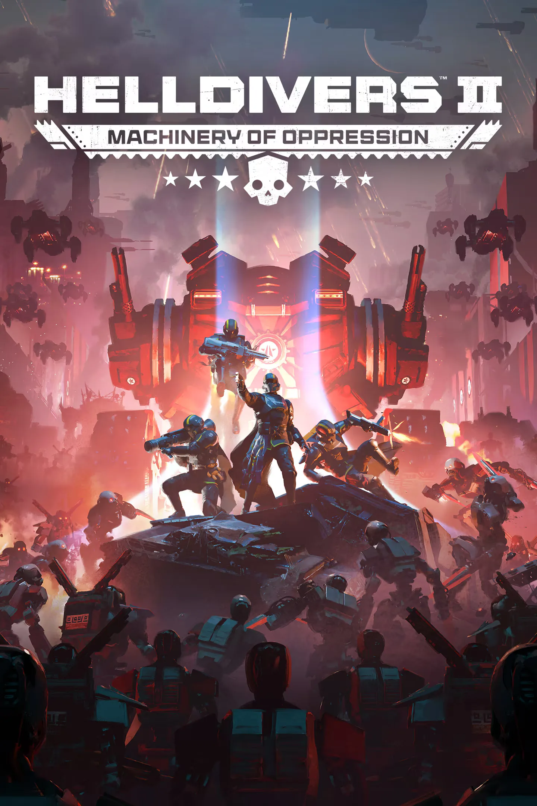

1.006.100
1.006.100

发布日期
2026-03-17
Release time
10:00 AM UTC
更新 Size
10.4 GB
Versions
补丁 Highlights
- New 敌人
- 光能者 Piloted Constructs
- A new 变体 of the 守望者:
- 突入者: inserts itself where it is not wanted.
- New Sub-阵营: 光能者 Appropriators
Introducing the 光能者 Fleets
- the Mindless Masses are set on taking over swaths of 领土, with fewer Illuminates units deploying vast hordes of 无票者 和 肉瘤体.
- the Appropriators field only 光能者 units, supported by a variety of constructs---piloted and otherwise.
光能者 Exostorms
Planets in 光能者 space have been sieged by powerful 光能者 Exostorms, with high-intensity wind and 闪电 strikes.
- Planets experiencing Exostorms will be 可见 on the 银河地图, but the 危险 will ramp up when you dive to the 行星’s 浮出地面.
- The 力量 of the storms can vary, with higher 级别 storms presenting 更大 risk.
In order to contain these planetwide storms, you must 完成 the new “摧毁异界尖塔” 任务.
New 任务 - 摧毁异界尖塔
The powerful storms seem to originate from 光能者 technology in the form of Exospires. Work with your squad to 摧毁 the Exospires and clear the storm looming over the region.
- Sub-目标: Exospire是受保护 by a force shield. The squad will first have to locate the access nodes that 连接 to the 地下 shield generators, and overload them with an 电力 surge of liberating force.
- Primary 目标: Once the force shield has been deactivated, the squad will enter the Exospire’s chamber and 摧毁 its core by eliminating the Dark Fluid cells that 维护 it.
Balancing
基本信息 变更 概述
Flamethrowers
- Some 敌人 now think its very inconvenient to be flamed in the face
- 更小 to 中型 sized 敌人 will in 基本信息 be slower while getting flamed with a 火焰喷射器
- 小型 to 中型 机器人, 小型 to large 终结族 and 小型 to 中型 illuminates will be confused and panic when getting flamed in the face. which leads to them attacking randomly
主武器
- AR/GL-21 One-Two
- Moved the underbarrel weapon 功能 from down to left
Sidearms
- PLAS-15 Loyalist
- 已增加 弹匣容量 from 7 to 8
- Shorter 强袭虫-up time on full charge up from 1 sec to 0.75 sec
- P-11 治疗剂手枪
- 增加 Heal 效果 with 100%
- 增加 Muzzle 速率 from 200 to 300
战略配备
- 重新补给
- You can now climb it again! But the autoclimb will not climb it. It's literally the best of both worlds!
- GL-21 榴弹发射器
- Reverted the change made in the 上一个 补丁 * the 发射器 has 中型护甲穿透 again
- CQC-1 One True Flag
- Moved and 已增加 the size of the 近战 能力
- The One True Flag is DESPISED by the 敌人 of Democracy. They will attempt to 目标 anyone waving it
- CQC-20 Breaching Hammer
- 已增加 伤害 from 2100 to 2200
- M-1000 Maxigun
- 已增加 弹药 容量 from 750 to 1000
- LAS-98 激光大炮
- 已增加 beam length from 200m to 1000m
- GL-28 Belt-Fed 榴弹发射器
- 已增加 弹药 from 100 to 120.
- GL-52 De-Escalator
- Faster 换弹
- 完整换弹 around 2 second faster from around 7.5 to 5.5 sec
- One 换弹 around 1 sec faster from around 3.5 to 2.5 sec
- AC-8 机炮
- Faster 换弹
- 完整换弹 around 1 second faster from around 5.5 sec to 4.5 sec
- Half 换弹 around 0.5 sec faster from around 2.3 sec → 1.8 sec
- B/MD C4 Pack
- Moved the switch from weapon 功能 from right to left
- 外骨骼机甲 Step 伤害 zone
- Made the 伤害 zone closer to the size of the legs.
- 绝地潜兵 and 敌人 were killed when not in close proximity
- This 效果 EXO-45 爱国者 外骨骼机甲 和 EXO-49 Emancipator 外骨骼机甲
敌人
将军
- 小型 to 中型 机器人, 小型 to large 终结族, and 小型 to 中型 illuminates will be confused and panic when getting flamed in the face, which leads them to randomly 攻击 anyone in their vicinity
修复
崩溃修复
- Fixed a crash that would occur during the 绝地喷射舱 掉落
- Fixed a rare crash that occurred when a 手榴弹 entered a 噪轰引擎 weakpoint
- Fixed a rare crash caused by 生化人 找掩护中
武器 & 战略配备 Fixes
- Fixed an issue where the Cyborg Agitator and Radicals 护甲 did not break properly when attacked by laser 武器库
- 已修复 B-1 补给背包 being usable by 绝地潜兵 that are already full on 弹药 on Xbox
- 轨道武器 lasers will 否 longer 目标 敌人 in caves
- Fixed 战略配备 bouncing on fuel depots in 工厂 cities
- Guard dog drones will 否 longer obscure your view while interacting with terminals or other 任务 items
- 绝地潜兵 will now start with 4 弧度 Grenades instead of 3
- Fixed an issue where the G-50 seeker 手榴弹 would not deal 伤害
- Fixed "low 弹药" and other notifications showing on 武器 with 无限弹药
- 属性 for 近战 武器 are now more 准确. Showing 伤害, weapon 攻击 速度 and 耐力 drain per 攻击
- Fixed a glitch that would let a player take multiples of the same 战略配备
敌人
- Fixed an issue where 虫族指挥官 would not summon 增援 when detecting a client player
- 监视者 will now 硬直 when their armour and 护盾 are destroyed
- 敌人 will now be alerted to the sound of the CQC-20 Breaching Hammer exploding
- The 无护甲 limbs attached to the Hiveguard's protective 前腿 now have lower 护甲
- Fixed an issue where surge modifiers spawned more 敌人 than intended
- Vox engine 更改：
- 已降低 生成速率
- 已降低 upper body turn rate
- 已增加 the 散射 of 主体 cannon shots
- MG 炮塔 on the 侧面 will now die instantly when the Vox Engine dies
- Vox Engine now tries to avoid shooting targets with its 主体 cannons on targets that are too close
- Fixed an issue where 敌人 could walk through the Vox Engines tracks to 攻击 the player
- Fixed a bug that would cause Bastion Tanks to be launched into the upper 大气层 when running over cars on colonies.
- Fixed an issue where scout walkers with rockets would not die when those rockets were shot, stealth divers rejoice
- Fixed a bug where Levers on Cyborg Assembly unit would not work if you were killed/ragdolled while interacting with them
Miscellaneous Fixes
- Sending an invite via the social menu on PS5 will now also send a system invite
- Fixed an issue where login error messages would go out of bounds, making them 困难 to read
- Fixed red lighting occurring on the 超级驱逐舰 after leaving a Magma 行星/Cyberstan
- Fixed a minor issue where UI would go out of bounds when dying with 3 类型 of Samples
- 已移除 the redundant "Compare" option when equipping 战略配备
- Fixed an issue where foliage that slowed a 绝地潜兵 would also slow projectiles passing through them
- Added the 正确 “Stun” and “弧度” 标签 to items that were missing the 标签 from their descriptions
- Purge 光能者 任务 has been renamed to 消灭监视者 to be more 准确
- 绝地潜兵 can now 近战 while falling or using the LIFT-850 喷射背包
- Fixed 武器 with stationary 换弹 being reloadable while using LIFT-850 喷射背包
- 光能者 Overships can now only be destroyed by the 行星 Defence Cannon